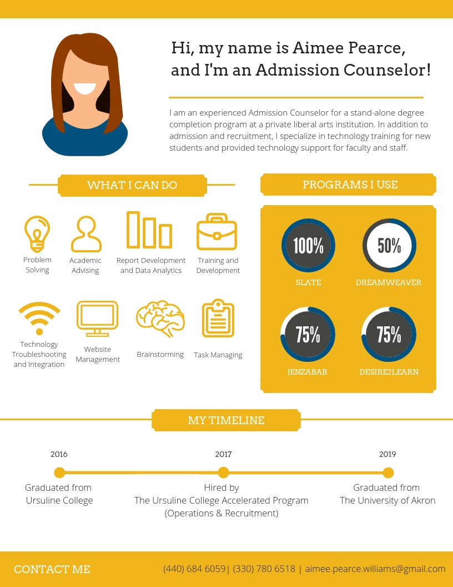

About Me
Thank you for viewing my ePortfolio page!
I entered the Educational Foundations in Instructional Technology program at The University of Akron in Spring 2018. My journey to The University of Akron began after transitioning into Higher Education. While being responsible for admission and recruitment for my department, I found through my relationship with many adult students that they lacked basic technology skills needed to thrive not only in the online class environment but also in the traditional classroom. The implementation of one-on-one technology orientations was incorporated into my new student orientations to assist my students for their educational journey.
In addition to helping students, I assist many faculty and staff with their technology needs. Becoming the point of contact person for technology in my department; prompted my search for finding a program that would help me to develop my knowledge and skills to support students, faculty, and staff at my institution.

Music Courtesy of BenSound
Last Revised: December 1, 2018. © Aimee Pearce 2018